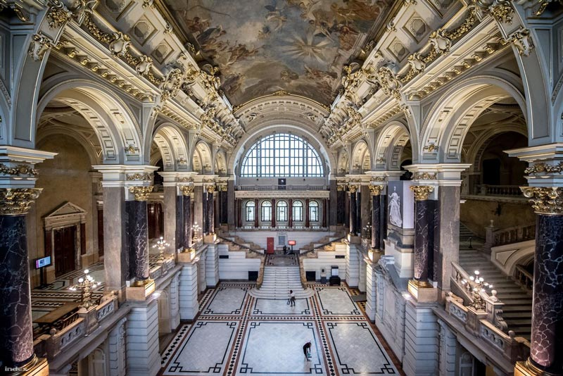

匈牙利建筑艺术

建国之初
匈牙利建国之初，罗马各省的道路和城市在迁移过程中并未被完全摧毁，并在其上形成了新的定居点。居住在这里的基督教信仰的斯拉夫民族教堂也幸存下来。
圣史蒂芬国王建国之初，需要建造纪念性的石制建筑。这种需求由从西方抢来的仆人和工匠，从意大利来的工匠，瓦工和石匠来满足。早期的基督教徒和拉文纳的影响，圣史蒂芬一世在塞克斯费赫尔瓦尔修建的圣母大教堂是当代欧洲最大的教堂，后来它成为匈牙利王国的行政中心，加冕教堂和传统的皇家墓地。较小的教堂，例如佩奇瓦拉德修道院，蒂豪尼修道院也能看到意大利的影响。佩奇大教堂的重建过程中，形成了匈牙利罗马尼亚风格的基本类型，形成了以半圆近端为结尾的三通道，无十字的大教堂。直到11和12世纪，塔楼的平面图系统几乎保持不变。
贝拉时代，它被更复杂的艺术所取代。在拜占庭统治期间，除拜占庭人外，法国还必须发挥重要的影响力。这在埃斯泰尔戈姆最为明显，他想建立一个类似于君士坦丁堡的中心，将世俗和教会建筑统一起来。在1181年被烧毁的圣阿达伯特大教堂也证明了这个理由。乔布大主教在大教堂南边建立了一座宏伟的教堂，一座皇宫和一个小教堂。当时塞克斯费赫尔瓦尔的建筑仍沿用佩奇的模式。13世纪初，埃斯泰尔戈姆发展起来了混合风格。如久洛白城堡大主教教堂的南大门所示，大门的类型尤其受欢迎。个别细节也像奥萨教堂中出现的旋风柱头一样散布开来。埃斯泰尔戈姆在基斯贝尼的改革教会中最为明显。
圆亭的作用
埃斯泰尔戈姆与法国关系，使修道院在顺序上出现了变化。1142年埃格里斯一个明确的艺术程序命令，禁止使用雕像雕刻，壁画和建造塔楼等，于是哥特式风格流行。贝拉统治时期，他们享有与在法国土地上一样的特权。当时建立的齐尔克和城堡修道院教堂的片段仅能幸存，而塔塔尔入侵之后的完整教堂几乎可以幸存。贝拉帕特法尔瓦教堂。潘诺哈尔姆修道院的子教堂建于格萨王子时代，也反映了西多会的影响，奥布达的女王城堡也采用这种风格建造。
普雷蒙德的作用
根据传统，在普雷蒙德的佳能骑士团的第一批修道院建于1130年代的瓦拉德吉福克，并在1135年前的文件中证明了它们的存在。在阿尔帕代期间，建立了39个教区长。在土耳其占领期间，普雷蒙德的国内运营几乎完全停止。他们的财产在18世纪成为奥地利教区长的财产。

法国罗马式的影响
除了西多会的影响外，法国罗马式的创作成果还出现在13世纪初。它改变了常规的平面图系统，用中庭扩
大了中殿，并用法式庇护所代替了半圆形庇护所。这就是卡洛克萨教堂的重建过程。在Vértesszentkereszti建立了本笃会修道院教堂建，带有中殿和多边形避难所。多边形神殿也与奥萨的教堂相连。最丰富的解决方案是久洛白城堡大教堂。
13世纪一些富有的阶层也想表达其在建筑中的自我意识。他们在庄园的中心，竖立着教堂作为埋葬地点，通常会增加一个小的修道院。第一家氏族成立于11世纪，但建筑类型的鼎盛时期是13世纪。它的基本形式是佩奇大教堂建立的三套系统，其后殿以半圆关闭，但塔楼的位置各不相同。在布尔万，有一对面向东方的塔楼，在阿科斯，东方的建筑已经被废弃，西方的建筑也已建成。在内部，总有一个领主画廊的地方。族裔修道院中最成熟的古迹并幸存下来的是在跨丹比阿的一所学校。莱贝尼教堂始建于1208年，1220年左右建造了雅克修道院教堂。由于塔塔尔人的入侵而中断了建筑。
根据圣史蒂芬关于建造10座教堂的法律，且教堂不应离村庄太远。建造的材料用木头，紫罗兰和藤条等。
在幸存的教堂中，可看到中央和长屋类型。很常见的装饰的内外部都带有圆形墙。这种纯圆形的平面图一般是墓地礼拜堂。对于当代世俗建筑知之甚少。住所可能是帐篷或木屋，而石屋仅是稀有之物。对城堡建筑不了解，但具有斯拉夫元素的城堡开始出现，城堡核心的埃斯泰尔戈姆住宅塔楼既是这种建筑。
从13世纪下半叶开始，作为艺术品的一个新的社会阶层，许多方面与皇家中心的艺术接触。除教会艺术外，还发展了重要的世俗艺术。建造房屋和城堡成为一项独立的艺术任务，并且哥特式艺术正在兴起。贝拉法则在大量的建筑工作开始之后，启动了在布达的建筑。尽管皇家中心已搬迁到奥布达，但从军事角度来看，该地点并不适合，因此在城堡山的南侧开始建造。当时布达的建筑仍处于中等水平，主要是防御方面。除城堡外，北侧还建立了一座城市。国王的计划还包括法国圣母大教堂和简单的抹大拉的马利亚，布达的多米尼加教堂和岛上的多米尼加修道院。罗纹的十字拱顶已经在这些建筑中出现了。
建筑工程在全国各地推行。贝拉通过捐款帮助富裕的酋长，并鼓励类似的活动。氏族和主教几乎是在竞争中建立起来的。这些城堡的中央住宅塔楼建在陡峭的岩石或山墙之上，根据地形，还增加了其它房间，墙壁和大门。城堡的院子很狭窄，这里是蓄水池，水源充足。巨大的旧塔楼通常阴郁，只能满足最适度的需求。
都市建筑
城市发展始于13世纪。当代文献已把肖普朗，布达和埃斯泰尔戈姆视为城市住区。在这些城市，如肖普朗的方济各会教堂的避难所和久洛费拉尔瓦尔总部教堂的避难所的扩大，都可以感受到布达建筑的光彩。这些都是基于安茹时代的早期哥特式艺术。
Diósgyőr城堡
安茹奠定了维谢格拉德城堡和宫殿的基础。布达城堡的建造是并行进行的，在路易大帝时代，今天宫殿的基础已经就位。西吉斯蒙德即位后，与布拉格的帕勒建立了直接联系。西吉斯蒙德修建了新宫殿和小镇升起的截塔。
那是哥特式城堡建筑的鼎盛时期。Diósgyőr市的路易大帝城堡是典型的四塔方形城堡类型的最早作品。这种作品有布拉迪斯拉发的塔塔皇家城堡和西吉斯蒙德城堡。除皇家城堡建筑外，贵族城堡建筑也占有重要地位，出现了带肋的十字形拱顶，各种门窗形状，家庭徽章在城堡门的，在塔的壁炉。例如特伦钦城堡；斯特里博尔家族的城堡；诺格拉德瓦克主教的城堡；此外，维斯普雷姆城堡。该时期最宏伟的作品是伏伊达洪城堡。
早期的哥特式教堂建筑
16世纪，几乎所有主教座堂都进行了扩建或重建，维斯普雷姆的子教堂， 杰尔的海德瓦里教堂，埃格尔的圆形神社。领主们建立了修道院和教区教堂。塞切尼方济会教堂由托马斯•塞切尼建立。亚诺什匈雅在托万建立了方济各教堂。创造教堂的先驱是1361年建立的福音传教士约翰教堂所在的巴黎圣礼拜堂。布拉迪斯拉发教堂也成为了主要陵墓的先驱。

城市建筑的鼎盛时期
14世纪，城市建筑得到了更广泛的发展。布达成为首都并迅速在城堡附近发展。典型的布达房屋类型形成于16世纪，以巴尔干风格的纵向立面朝向街道为主。哥特式住宅在农村也幸存下来。城市建筑中其它类型的建筑物只能在资源中了解，布达市政厅的遗骸在城堡博物馆中。锡比乌和布拉迪斯拉发的市政厅全部留存了下来。教会的建筑对于塑造城市景观仍然至关重要，城市教区通常是在王室的支持下建立的。路易大帝的徽章位于克卢日-纳波卡的西吉斯蒙德圣迈克尔教堂的萨克森礼堂圣殿中，马蒂亚斯的徽章在布达的圣母大教堂。国家教堂的两塔立面式在这些教堂中幸存下来，不同之处在于仅完整建造了一座塔（科希策大教堂，布拉索夫黑教堂）。塔式头盔通常由四个年轻的塔组成。贝拉四世时城墙城堡开始建设，在西吉斯蒙德1405年颁布法令后，便开始大规模建造。城墙后面有木制的防护走廊（布达，佩斯，科鲁-纳波卡城墙）。乡村教堂的布局没有改变，保留了两个空间的结构（圣所和中殿）。建筑物的大小增加了，圣所得到了一个基于多边形的，肋状的十字形拱顶。塔被连接到西立面。在塞克勒兰，他们经常被提供防御工事和舷窗。特兰西瓦尼亚的撒克逊人，把罗马式教堂改造成哥特式是很常见的。15世纪末，书面资料记载了艺术家以及集镇和乡村大师。阿尔索斯庄园是村庄建筑的独特纪念碑。文艺复兴
5世纪下半叶，哥特式建筑开始被文艺复兴所取代，德法影响力被意大利所取代。政治原因也有助于这些变化。由于马蒂亚斯的更改计划首先在布达总部进行。文艺复兴时期通过贵族和大祭司进行传播。匈牙利文艺复兴时期可分为三个风格时期。
文艺复兴早期（1460-1541）
成熟的文艺复兴（1506-1570）
文艺复兴晚期（1570-1690或1750）
通常情况下，当地变种发展，一些文艺复兴现象并存。
文艺复兴早期
最早的文艺复兴时期的建筑是马蒂亚斯的宫殿，布达城堡及其庭院的东翼，维谢格拉德宫殿，奈克别墅。他们的风格跟随着托斯卡纳的复兴。马蒂亚斯的建筑师来自佛罗伦萨，他在布达建立了个重要的石匠工场，石匠从那里开始了解意大利的图案并继续进行下去。此后紧接着的是埃斯泰尔戈姆的大主教堂（1480-1500）的建设，塔马斯•巴科茨斯等都建在埃斯泰尔戈姆。
成熟和晚期文艺复兴
成熟的复兴的迹象可以追溯到1506年，即巴科奇教堂的建造。乔安妮斯•佛罗伦萨的雕刻和佩奇大主教杰尔吉•萨瑟玛的会幕。
在莫哈奇灾难和布达倒台之后，建筑继续沿完全不同的路线发展。按照国家划分，形成了三个艺术省，其正式语言可以清楚地区分：达旦比亚，高地和特兰西瓦尼亚。然而，意大利的影响仍然占主导地位，特兰西瓦尼亚受托斯卡纳的影响，而在丹丹比继续遵循意大利的模式。
到了复兴后期，匈牙利人的角色已占主导地位，尽管有许多意大利大师在该国工作，但没有任何纯粹意大利元素。
巴洛克式
匈牙利的巴洛克艺术与文艺复兴时期晚期并存很长一段时间。它伴随着欧洲潮流，并在佩特•帕兹玛尼的努力下首次在文学中确立其地位。
第一个记忆是斯巴佐设计的特尔纳瓦的前耶稣会教堂，圣依纳爵教堂和杰尔的圣乔治索普隆教堂和科希策的前耶稣会教堂。这一时期的建筑师通常是意大利大师，例如卡洛（1616-1667），马蒂内利（1684-1747）。匈牙利巴洛克式教堂的建筑特色是高耸的塔楼和大门，由窗户照亮并由礼拜堂分隔的教堂中殿。
城堡建筑遵循上个世纪的传统。首座巴洛克式城堡由帕拉丁在意大利艾森斯塔特与意大利建筑师卡洛恩共同建造。但城堡建筑是在土耳其战役之后才得以展现。首先，尤金•拉克维城堡（1700-1702年）根据计划建造了约翰•卢卡斯•冯•希尔德布兰特。它的U形平面图包围了庭院，与以前的城堡完全不同。然而，城堡建筑的主线并没有遵循这一主线，而是从1920-30年代的法国模式。

18世纪
最初的世俗建筑被教堂建筑所压制，例如杰尔的卡梅利特教堂，特伦钦的耶稣会教堂和住所，佩斯的波琳教堂（大学教堂）等。当时在可能的情况下，重新安置的大平原的大部分教堂都建在以前教堂的遗迹上。巴洛克式世俗建筑的鼎盛时期终于在18世纪下半叶发生。应玛丽亚•特蕾莎的要求，布达皇宫的重建始于1710年-1797年，伊格纳克•奥拉塞克1750年-1770年和弗朗兹•安东•希尔布莱特1719年-1797年。主教宫殿是在奥拉迪亚，瓦茨，桑博阿特利，塞克斯费黑瓦尔和卡洛克萨等国用教堂的钱建造的。
成熟的巴洛克风格最著名的教堂包括由弗朗兹•安东•皮尔格拉姆设计的雅索教堂，埃格尔的少数派教堂和布达的圣安妮教堂。塞克斯费赫尔瓦尔的西多会教堂建于1756年，其圣堂收藏着匈牙利最有价值的洛可可式家具。1771年，玛丽亚•特蕾莎皇后在同一地点，为极其富有的圣史蒂芬大教堂重建，该大教堂于1777年成为了罗马天主教教区塞克斯费赫尔瓦尔的大教堂。教堂的建筑主要受到南德的影响，而在世俗建筑中，法国的影响则有所增强，这在费特埃德的埃斯特哈兹城堡中可以清楚地看到，洛可可的出现，它唤起了凡尔赛城堡的辉煌。匈牙利晚期巴洛克式城堡建筑中最杰出，最美丽的例子之一是位于哥德勒的格拉萨尔科维奇城堡。它对贵族宫殿产生了影响。埃格尔，布达城堡，肖普朗和维斯普雷姆城堡的巴洛克式数量具多。
巴洛克式的风格此时也开始影响乡村建筑，并发展出具有民间特色的农民巴洛克式风格。该倾斜的巴洛克晚期编织风格的体现在了维斯普雷姆的大教堂和主教宫殿，松博特海伊的主教宫，塞克什白堡的宗座教会和埃格尔高中。

1808年，约瑟夫成立了美化委员会，职能一直持续到1857年，确保了经过深思熟虑的城市建筑和新建筑的风格统一，从而有助于使古典主义具有公民意识，并开始建造豪宅，排屋和公共建筑。第一个主要建筑是旨在通过米哈伊（1755年至1819年）德布勒森的大教会。在宗教改革之前的几十年中，两位主要的大师接班，分别是米哈伊波拉克（1773-1855）和约瑟夫希尔德（1789-1867）。他们在改革时代也起了领导作用。波拉克的第一个独立作品是德克广场的路德教会，然后他设计了几座宫殿和城堡。他的主要作品是匈牙利国家博物馆的建筑，在匈牙利古典主义中也占有重要地位。希尔德的作品塑造了新兴资本的古典主义形象劳埃德宫，坦泽故居，埃格尔大教堂。除了佩斯和布达以外，古典主义建筑的主要中心是埃斯泰尔戈姆。大教堂最初是根据约瑟夫波拉克（1796-1839）的计划，最终由约瑟夫希尔德完成。古典主义房屋在全国各地建造，有时带有省级特色。
从19世纪中叶开始，已经使用东方元素的浪漫主义就受了它的影响。它的主要主人是弗里吉斯•费斯（Frigyes Feszl1821-1884年）。他首先尝试使用摩尔人和拜占庭元素创建匈牙利国家建筑。他的主要作品是《佩斯维加多》（PestVigadó），这也是欧洲浪漫史上的杰出作品。
温顿莱海纳（ÖdönLechner）想创建一个国家建筑，一个独立的建筑思维。他强调匈牙利人民的东方传统，引进其它具有东方特色的元素，加入匈牙利民间艺术，创造了奇特的匈牙利新艺术风格。他的作品对年轻一代产生了巨大影响，尤其是他的非布达佩斯建筑（克切斯凯梅特市政厅）。
艺术风格斯特文•梅奇亚斯萨（维斯普雷姆裴多菲剧院，肖布朗裴多菲剧院，拉罗斯穆利亚德教堂）是一个全国性的字符（钢筋混凝土），再加上特殊的国际技术，它在许多方面很前卫。1920年建造了新艺术风格的乡村房屋，一战结束了匈牙利新艺术风格的繁荣。石膏建筑只保留了民间特色中的图案珍宝。
匈牙利第一位现代建筑师贝拉•拉伊塔（BélaLajta，1873-1920年）。玫瑰谷百货商店是匈牙利第一座现代建筑。在他之后，莫里克•波甘尼（MóricPogány，1878-1942年）和丹尼斯•吉尔吉（DénesGyörgyi，1886- 1961年）都是创新者。这还包括一个事实，即第一次世界大战是匈牙利建筑史上一个非常尖锐的突破。
在两次世界大战之间，折衷主义恢复了一段时间，但新潮流越来越流行。
1929年，在法兰克福的国会上，CIAM决定组建民族团体。沃尔夫•莫纳尔（FarkasMolnár）与几位匈牙利建筑师一起参加了大会。归国后，由沃尔夫•莫纳尔领导的匈牙利CIAM小组成立。意在促进现代建筑。该组织在第一阶段中组织了三次展览。该组织第二阶段的特点是民间客户的公寓和私人别墅的设计。该组织的匈牙利集团于1938年解散。它的建筑影响力实际上在二战之后才有成果。

20世纪上半叶的匈牙利最重要的建筑任务
是战争后的重建。在独裁统治时期，苏联早已蓬勃发展的社会主义建筑成为典范，这体现在过时的折衷主义古典主义中（蒂博尔•维纳（Tibor Weiner）领导的杜纳瓦瓦罗斯（Dunaújváros）的建筑;宴会厅，公寓楼）。这个时代也具有建筑价值。其中包括：应用艺术学院和格德勒水塔。他们成为本世纪末匈牙利特色的“创意建筑一代”的代表，从而成为以前的先驱者与新的先驱者之间的桥梁。
这个时代跨度从1956年到本世纪末，是一个明显的剧烈的变化时期。在社会政策领域，独裁专制，鼓舞人心但失败的革命，报复，然后是一党的日益严重的危机现象，自上而下的社会经济形成，政治制度的变化，停滞的重建民主而导致的问题。
建筑和建筑观念的转变过程始于较小规模：建筑精神从东方现实主义者开始，到早期匈牙利前卫的痕迹和经验丰富的创造者，而教育工作者和学生-从事实践的年轻建筑师-学会并吸收了包豪斯原理，功能，结构，现代材料和形式形成的理念，集体精神。重新发现智力价值。对建筑的解释已扩展到环境文化，环境保护，城市规划，建筑和定居经济学，建筑和建筑政策。
但是，建筑师的工具也发生了变化，从对数和拉墨器，到不断流行的绘画，旋转笔到计算机软件，立面图和实体模型，再到视觉建模，再到在万维网上运行的视频……
六十年代时期代表性建筑是工业建筑，医院，宿舍和办公楼。作为大规模住房计划的一部分，新社区的设计和建设使城市规划和建筑逐渐成为独立的“城市主义”学科。在此期间，用预制构件建造的房屋在满足社会期望的环境文化和社会过程中仍然起着决定性的作用。